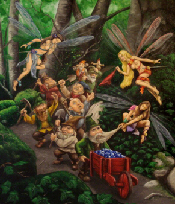
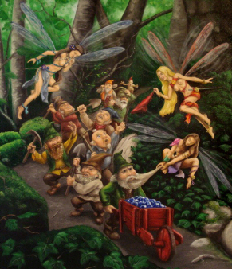
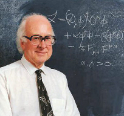

Mi amiga Eva prefiere los duendes. Dice que se comen a mis adorables haditas, las que, de acuerdo con el biólogo y autor Richard Dawkins, es imposible demostrar que no vivan en el fondo de un pozo. Al igual que Dawkins, me siento tan agnóstica sobre los dioses como sobre las haditas; todos ellos, pienso, son inventos del pensamiento humano.
“El hecho de que no se pueda probar la no existencia de Dios es algo aceptado y trivial en el sentido de que nunca podremos absolutamente demostrar la no existencia de algo”, escribió el popular ateo británico en su libro El espejismo de Dios.
Lo que nos lleva a las sabias palabras del filósofo Bertrand Russell, quien decía lógicamente que es aquel que afirma algo quien debe demostrarlo; y, por supuesto, si se trata de un evento extraordinario, añadiría Carl Sagan, se requieren de evidencias igual de extraordinarias para que lo demos como un hecho. Sin embargo, la gente en general va descartando deidades y ritos gradualmente; filtros culturales y educacionales nos impulsan a rechazar las haditas y a otros seres sobrenaturales según lo consideremos aceptable; ciertamente, descartamos más dioses de los que adoramos. Otros más aseguran que es imposible conocerlo todo.
Y digo yo, si la especie sobrevive el tiempo necesario, los misterios del Universo serán todos resueltos y ninguno tendrá que ver con un creador. Los dioses, como los monstruos, las hadas, Spock y Shrek, son producciones humanas y por tanto destinados a morir con la especie. Pero imaginemos por un momento que otras especies en otros planetas también hayan arribado a estas experiencias divinas; pues no estaría fuera de lugar si tenemos en cuenta que los animales al evolucionar van entendiendo mejor el mundo que habitan de acuerdo a la capacidad cerebral y la información que vayan adquiriendo. Tenemos suerte de poder vivir pero nada más; el mundo no apareció para que lo habitáramos, evolucionamos gracias a esos accidentes y singularidades, y no al revés.
Pensar que la ciencia no tendrá acceso a las incógnitas de hoy es ignorar lo que hemos conseguido hasta el momento. Los resultados del progreso humano están ahí, palpables; estancarnos en la idea de que nunca lo conoceremos todo es subestimar esa parte del ser humano que es impulsada por una intensa e incansable curiosidad. Yo no lo conoceré todo, pero la especie tiene todo el potencial para hacerlo, puedo ser escéptica frente a las actividades científicas, pero no agnóstica.
Evidentemente, ser escéptico es saludable. La ciencia enarbola el método científico como su mejor arma contra la subjetividad y el anhelo humano. Hasta el momento ha funcionado (con sus fallas, que generalmente son capturadas por el tiempo), y nos provee con formas variadas de muestrear, probar y diseccionar el Universo. Pero a la hora de informar sobre estos temas, el pensamiento humano se encierra ante su fría e indiferente perspectiva. La prensa, que hoy la caracteriza el mercantilismo, profesa un sensacionalismo tan alto que hay que pasarse la vida peleando por el título menos condescendiente o erróneo. En ese sentido, las metáforas ayudan a la hora de brindar explicaciones a incidentes singulares; sin embargo, ocurre muchas veces que en el proceso predisponemos a cierto tipo de lector a formar vínculos metafísicos que no están ahí.
Un ejemplo llamativo es el de la partícula subatómica Higgs cuando se convierte en la partícula de Dios. Al cambiar el significado, el autor quiere emitir y hacer obvia la importancia que tiene este descubrimiento en cuanto al origen del Universo. Sin embargo, utilizar el concepto de dios, aunque entendible como metáfora, también conlleva a la facilitación de una relación entre estos fenómenos físicos y una idea puramente humana pero que es entendida como sobrenatural por millones de “corderos”. Al final, sea lo que sea que descubramos estará siempre dentro de las posibilidades de que ocurra por el simple hecho de ocurrir.
“Estaban seguros de que habían obtenido cierta ‘gnosis’, de que habían, más o menos exitosamente, resuelto el problema de la existencia, mientras que yo estaba seguro de que no y disfrutaba de una fuerte convicción de que el problema era insoluble”.

De esta forma, tan absoluta en su incertidumbre como la iglesia en su certitud, T. X. Huxley expone por primera vez (supuestamente en una fiesta en Londres), su idea sobre el agnosticismo, la cual sigue algunas de las conclusiones de Hume y asume que el agnóstico se adjudica la posición contraria frente al conocimiento absoluto que proclama la Iglesia. Hoy su postura representa, entre muchas, la idea de que es imposible conocer el origen de todo y, para algunos, que es imposible demostrar la existencia o no de un Dios.
Es posible que si Huxley viviera hoy, con todo el conocimiento y la información disponibles, no estaría tan seguro sobre su enunciado. Homo sapiens posee el potencial para descubrir cada recoveco de este Cosmos y si disfrutáramos del tiempo necesario y las condiciones ideales, continuaríamos investigando hasta saberlo todo. Y aunque también es posible que las cosas cambien y que enfrentemos, como hemos hecho antes, un retraso en el progreso, una era de oscuridad y represión (además de que somos vulnerables a varios tipos de extinciones masivas), ya sabemos suficiente para sacar conclusiones racionales; no hay por qué negarlo.
Sin embargo, la humildad sigue siendo premiada. Asumir que se sabe poco es mucho más noble y cordial para los demás. En ese sentido, a los ateos se nos observa como engreídos, vivir sin dioses denota para muchos una arrogancia que raya en el pecado. Es más sublime adoptar una actitud de duda y desconocimiento, denota elegancia e inteligencia; de nuevo aquel adagio de que es de “sabios reconocer que no se sabe nada” que ha sido una constante durante milenios, memes difíciles de cambiar; cosas de humanos.
Pero el Universo no es humano, estamos aquí porque numerosos accidentes y variables lo permitieron. Al Cosmos no le importa lo que yo piense y creer que sí es continuar con la visión antigua de que somos el centro de todo y que conceptos que van más allá de lo físico controlan nuestras vidas. Para mí, reconocer que tengo una suerte inmensa de haber nacido y vivir sin dioses no es arrogancia, es notar lo espectacular que es el mundo que describe la ciencia y maravillarme con lo ocurrido; de hecho, que la vida en general carezca de sentido metafísico sólo me impulsa a darle más sentido físico a mi vida, además, lo que hoy sé es suficiente para plantearme conclusiones lógicas sobre el mundo. Por eso soy atea y no agnóstica.
El que crea en la telequinesis que levante mi mano
Capgras y Cotard en el cerebro
De la misma forma en que nos percibimos como el centro del Universo, así también deseamos pensar que nuestro cerebro se rige por la metafísica; así, promovemos ideas ambiguas que impulsan la aparición de embrollos paranormales, la nueva religión de millones. Pero la neurología moderna me ha convencido de que podemos reducir nuestro comportamiento a un análisis objetivo entre químicos y memes. Ahí está todo: en los genes que construyen neuronas y sus intercambios con el ambiente por donde se mueve el animal. Fallos provocan cambios en las conductas y la percepción, lo demás es interpretación. Veamos un ejemplo.

Arturo tiene un problema particular, este señor reconoce físicamente a sus padres pero asegura que son impostores, que se los han cambiado por otros que lucen exactamente igual. Los neurólogos Oliver Sacks y Vilayanur Ramachandran han escrito sobre este desorden del Capgras, el problema que padece Arturo, y de otros peculiares desórdenes neurológicos. Por mucho tiempo, escribe Ramachandran, se intentó dar una explicación “freudiana” al Capgras, se asumió que ocurría debido a los lazos conflictivos que todo hijo tiene con sus padres, sin embargo, la diversidad de casos derrumbó aquella hipótesis, especialmente cuando uno de los pacientes afirmaba que su perrita, Fifí, era también una impostora.

Hoy sabemos que el cerebro se conforma de varios caminos con funciones bastante específicas. Ramachandran explica que cuando vemos un rostro varias actividades ocurren; una de ellas trabaja en reconocimiento: ¿es conocido o no? Una vez la respuesta es arrojada, otro camino envía la información al sistema límbico donde se hace un levantamiento emocional: ¿cómo me siento cuando veo a esta persona? Otras vías recogen después memorias y otros aspectos de nuestra asociación con el rostro.
El paciente Arturo reconoce que esas personas a las que llama impostores lucen como sus padres. “El problema no parece estar en la vía de reconocimiento. Pero para asegurarnos, realizamos experimentos donde probamos su capacidad, no sólo al reconocer rostros, sino para distinguirlos de otros iguales o parecidos. Arturo no tuvo problemas en esa área”, relata Ramachandran en su libro Fantasmas en el cerebro.
Aparentemente, el problema anda en el camino hacia el sistema límbico. Arturo reconoce los rostros de sus padres pero el camino que solicita y envía sus emociones sobre ellos está dañado; al no sentir nada hacia ellos, el cerebro de Arturo intenta interpretar esa paradoja y recurre a inventos: “son impostores”.
Ramachandran también realizó pruebas galvánicas en Arturo y otras personas que no sufrían de Capgras. Estos exámenes miden la reacción en la piel cuando reconoces a alguien a quien te une un lazo intenso. Los individuos sin Capgras muestran altas lecturas galvánicas al ver las fotos de sus padres. Pero en Arturo nunca hubo cambio espontáneo, a veces un pequeño pico después de varios segundos, como si lo recordara tardíamente, más de ahí, sus medidas no se diferenciaban entre rostros.
Arturo tampoco se comportaba como pacientes con la enfermedad de Cotard, por ejemplo, quienes han perdido la capacidad de sentir y por eso aseguran estar muertos, dicen oler la descomposición de su piel y hasta ver como los gusanos la devoran. Algunas personas cuyas amígdalas cerebrales (todos tenemos dos) han tenido que ser extirpadas, pierden el contacto con el sistema límbico y, por tanto, carecen de emoción pero no inventan historias para explicar lo que les ocurre; sin embargo, estos pacientes con Cotard, al no saber qué les pasa sus cerebros recurren a cualquier dilucidación por más inverosímil que parezca. Pero Arturo sí posee emociones, Ramachandran hasta lo vio llorar.
No todas estas conductas son síntomas de locura aunque así lo parezcan. Estos problemas pueden ser explicados si los reducimos a fallos neurológicos. De hecho, para Arturo y sus padres esa explicación alivió la carga de su enfermedad, el intérprete en la azotea tenía ya una razón lógica sobre lo que no sentía. Muchos temas neurológicos no deben ser asumidos como problemas psiquiátricos ya que pueden ser explicados a través de daños ocasionados por traumas o derrames en conocidos circuitos cerebrales. Reducir la mente a lo que es, químicos, conexiones, caminos y sistemas, eliminará la necesidad de crear esas ideas metafísicas que sólo contribuyen a confundir y a llenar los bolsillos de las pseudociencias. Es el escepticismo duro frente a todos los dioses, tanto los dictadores como los místicos, y no el suave y permisivo agnosticismo, lo que al final frenará la ignorancia, erradicando así las posibilidades de fraudes y engaños.
Como bien lo describió el conjurador y escéptico James Randi: “¿La nueva era? Es sólo la vieja era metida en el microondas por 15 segundos”.
Volver al índice de la Lupa Herética
© 2008-2023 Glenys Álvarez y Sin Dioses. Prohibida la reproducción con fines comerciales.
Comentarios
Comments powered by Disqus